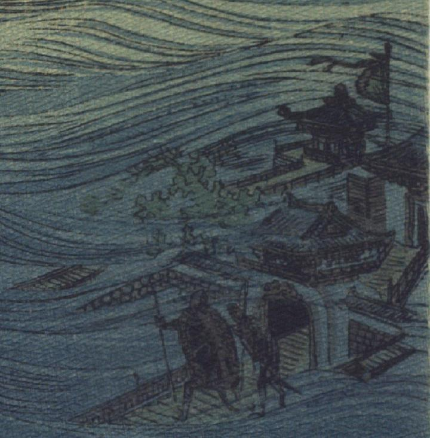

亀の化物。2体の亀が後脚で立ち上がり、前脚で棒状のものをもっている影が、海の底に見える。亀たちが立っているのは、竜宮城の門前である。
著作者：J.Dautremer／出典：親書誌：U426_nichibunken_0107：La meduse simple et naïve／日付：2006／資源識別子：U426_nichibunken_0107_0001_0002
Copyright (c)2010- International Research Center for Japanese Studies, Kyoto, Japan. All rights reserved.